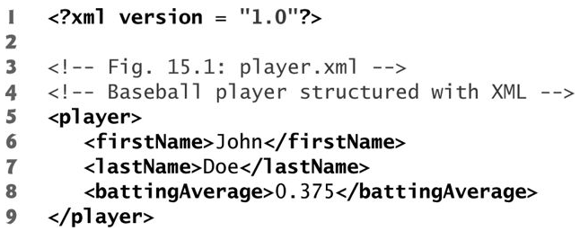
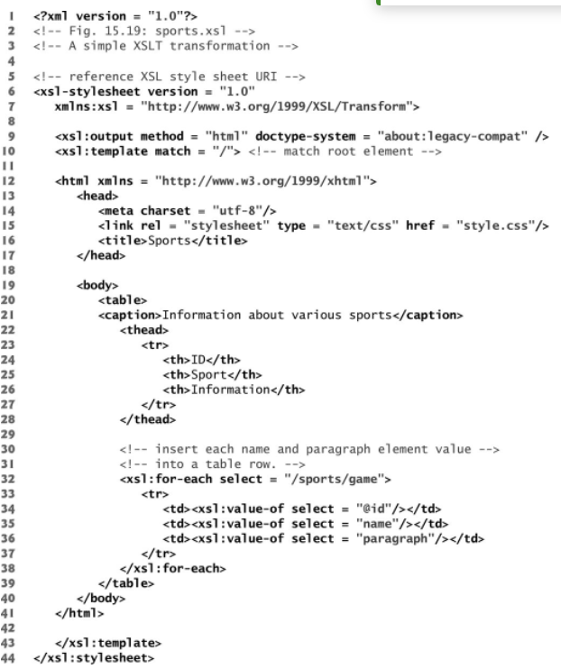

In this unit we cover the basics of XML and AJAX. We discuss what they are and when they are useful. We will
illustrate these technologies
using examples as well.
XML
Introduction
The extensible markup language (XML) was developed by the W3C's xml working group. It is widely used an has become
the standard format for data exchanged between applications over
the internet.
Basic Anatomy
Consider the following snippet of an XML document, designed to describe a baseball player's information (Taken
from textbook).

-
Line 1 declares the file to be an xml file
-
Lines 3 and 4 are comments which are identical to comments in html.
-
Text data is enclosed by start and end tags. For example lines 6 and 7. Every start tag must have a
corrosponding end tag.
e.g. <firstName> John </ firstName>
-
An XML element may contain other XML elements and hence become more complex.
-
Every XML document must contain exactly one root element that contains all other elements.
Which is <player> in our example.
XML docouments on its own are text files containing structured data.
They can be viewed in the browser without styling. Styling can also be added
using XSL (Extensible stylesheet language).
XML validation
XML documents may reference Document Type Definition (DTD) or a schema document (XSD)
to validate the structure of an XML document. Some parsers use the schema or DTD to ensure the XML document
follow a
desired and defined structure. An XML document that conforms to a schema or DTD is considered valid.
XSL
XSL (Extensible stylesheet language) tell the browser how to render and lay out the XML document.
XSL essentially maps XML values to html layout elements using xsl syntax. The following
snippet illustrates how xsl generates a web page for xml (sourced from textbook).

As you can see the document is an xsl document. But, we can also make out the familiar html elements as well.
xsl also enables us to make use of templates. Templates can be designated to match the name of an element
or root of the document (line 10). We can also use the xsl:for-each element for generating repeating elements in
a document.
To learn more about xml visit: xml tutorial
AJAX
Introduction
Rich internet applications (RIAs) try to replicate the feeling and usability of desktop apps as much as
possible.
In order to make web apps more responsibe RIAs incorporate Asynchronous Javascript and XML (AJAX). AJAX calls
are asynchronous and therefore non-blocking.
They separate client-side user interface interaction from client server communications and emulate a parallel
run time environment. We can use AJAX calls
to make requests to servers and fetch their response using asynchronous callback functions. We can use these
callbacks to perform partial page updates and make our applications more
responsive and faster overall. The partial page updates help us to reduce the amount of page reloads as well.
Using AJAX
To begin using AJAX we must make use of the XMLHttpRequest object. We can use this object to perform
a send request operation. Using the method "send()" we can make requests to a server for example.
We can use an event handler called "onreadystatechange" to detect when a response has been received from the server.
We can check the status of the response using the "status" attribute which is 200 for a success response.
The following code snippet illustrates how we can make a simple get request to a server using XMLHttpRequest:
var xhttp = new XMLHttpRequest();
xhttp.onreadystatechange = function() {
if (this.readyState == 4 && this.status == 200) {
document.getElementById("someId").innerHTML = xhttp.responseText;
}
};
xhttp.open("GET", "server-url", true);
xhttp.send();
Note that "this.readState == 4" indicates the request has been fulfilled.
It's also worth mentioning that the jQuery library provides very useful wrappers for the AJAX APIs
that greatly simplify the development process for adding AJAX features to a webb application.
Lastly to learn more about AJAX, visit: AJAX
Tutorial
Summary
In this section we learned about xml, how to validate it's structure using xsd or DTD and how to style and
present it using XSL.
We discussed the importance and usefulness of xml in modern web applications. Finally, we also went over AJAX.
We discussed it's importance and use cases along with looking at
simple examples of how we can use AJAX methods to make our applications more responsive.
Congratulatins on finishing this Unit! When you are ready please take the quiz.